Multi-Channel Speech Enhancement for Cocktail Party Speech Emotion Recognition
Authors:Youjun Chen, Guinan Li, Mengzhe Geng, Xurong Xie, Shujie Hu, Huimeng Wang, Haoning Xu, Chengxi Deng, Jiajun Deng, Zhaoqing Li, Mingyu Cui, Xunying Liu
Abstract: This paper highlights the critical importance of multi-channel speech enhancement (MCSE) for speech emotion recognition (ER) in cocktail party scenarios. A multi-channel speech dereverberation and separation front-end integrating DNN-WPE and mask-based MVDR is used to extract the target speaker's speech from the mixture speech, before being fed into the downstream ER back-end using HuBERT- and ViT-based speech and visual features. Experiments on mixture speech constructed using the IEMOCAP and MSP-FACE datasets suggest the MCSE output consistently outperforms domain fine-tuned single-channel speech representations produced by: a) Conformer-based metric GANs; and b) WavLM SSL features with optional SE-ER dual task fine-tuning. Statistically significant increases in weighted, unweighted accuracy and F1 measures by up to 9.5%, 8.5% and 9.1% absolute (17.1%, 14.7% and 16.0% relative) are obtained over the above single-channel baselines. The generalization of IEMOCAP trained MCSE front-ends are also shown when being zero-shot applied to out-of-domain MSP-FACE data.
I. Multi-channel Speech Enhancement Front-end ArchitecturesII. Three Pipelined Emotion Recognition Systems
III. Experimental Setup and Results
IV. Reference
I. Multi-channel Speech Enhancement Front-end Architectures

- In the pipelined integrated MCSE front-end, DNN-WPE based speech dereverberation is followed by mask-based MVDR speech separation, which can produce the best overall speech enhancement and recognition performance [1].
- The internal structural details of the TCN block and Visual Conv1DBlock are shown as following:
II. Three Pipelined Emotion Recognition Systems
Three emotion recognition decoders are designed for audio-only and audio-visual ER systems:
- Audio-only ER system (MCSE-ER (Audio-only)).
- Early-fusion audio-visual ER system using cross-modal attention-based fusion block (MCSE-ER (AV-Early)).
- Late-fusion audio-visual ER system using the weights of audio (w_audio) and visual (w_visual) to calculate the final classified probability (MCSE-ER (AV-Late)).
III. Experimental Setup and Results
A. Experimental setup
- A 15-channel symmetric linear array with non-even inter-channel spacing is leveraged to simulate the multi-channel overlapped-reverberant-noisy mixture speech using the IEMOCAP dataset [2] with total of 5,531 utterances with 4 different emotion labels.
- For the detailed preocess of parameter setting and simulation, please refer to Section V.A of the submitted manuscript.
- The resulting simulated dataset contains 110,620 utterances, totalling 140 hours.
- The task fine-tuned HuBERT [3] and ViT [4] are used as the audio and visual encoders, respectively.
B. Experimental results of speech enhancement front-end outputs on the simulated IEMOCAP mixture speech
| Four examples on the mixture speech with different emotion labels | |||||
|---|---|---|---|---|---|
| Sad | Happy | Neutral | Angry | ||
| Target speaker video | |||||
| Target speech emotion label | Sad | Happy | Neutral | Angry | |
| Interfering speech emotion label | Angry | Angry | Sad | Happy | |
| Target clean speech | 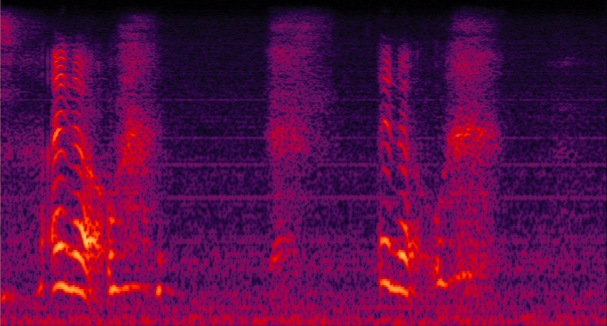 | 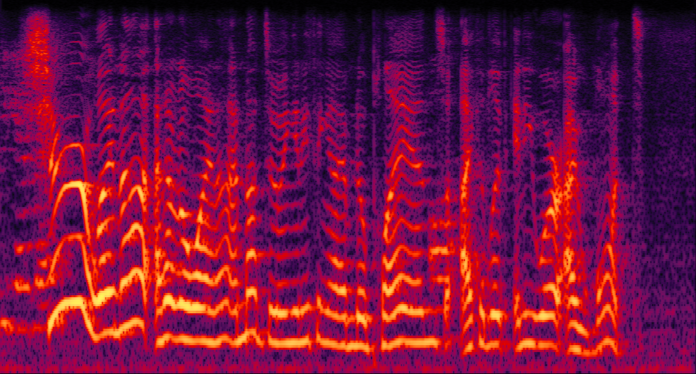 | 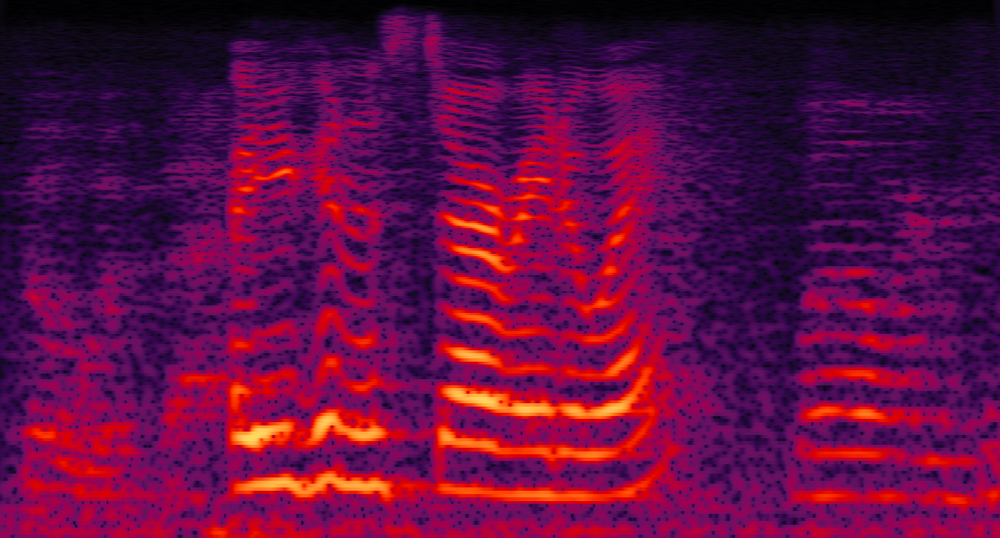 | 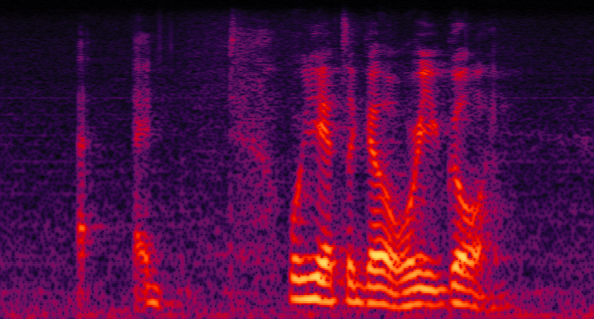 | |
| Mixture (overlapped-reverberant-noisy) |
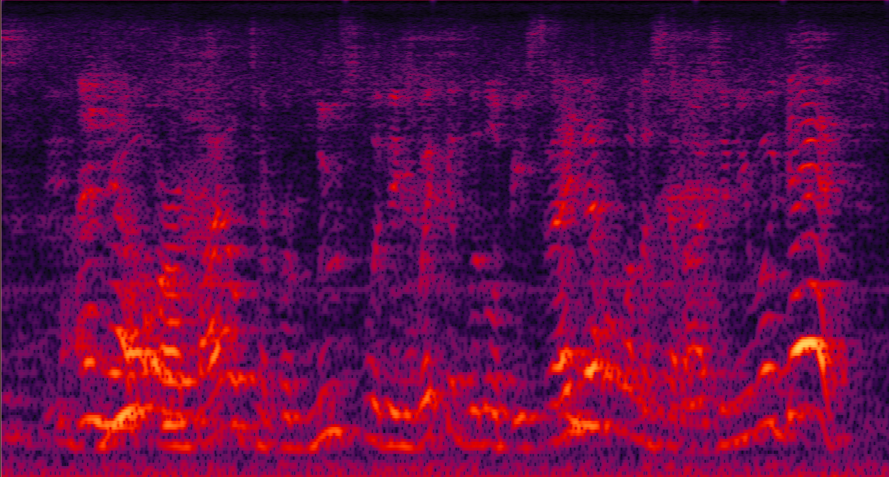 | 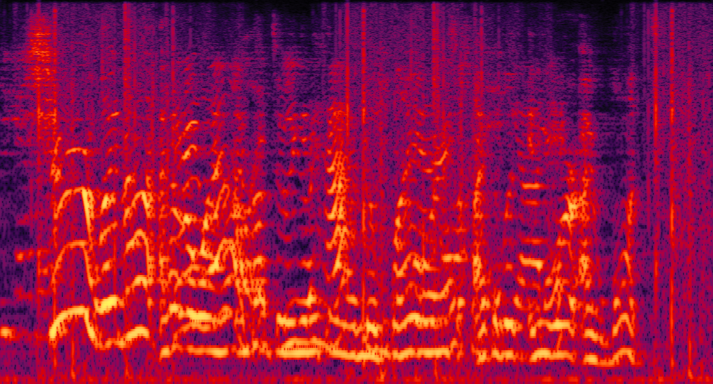 | 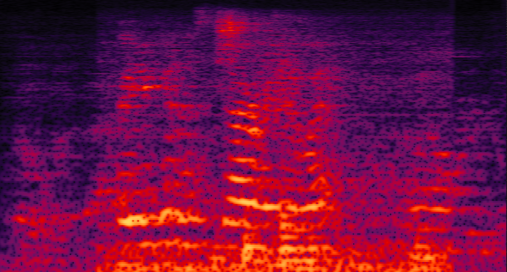 | 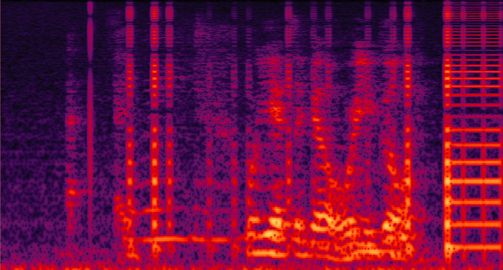 | |
| Enhanced by speech dereverberation | 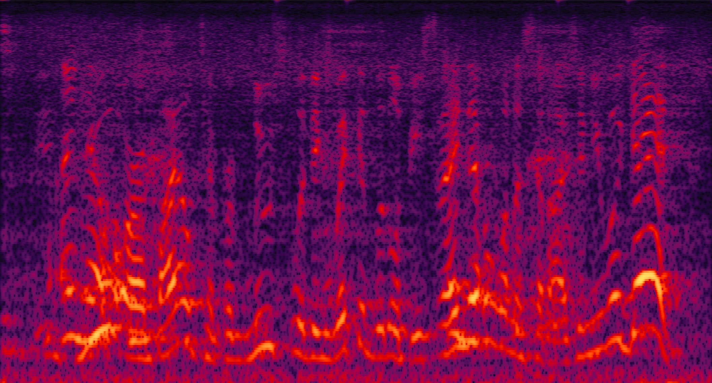 | 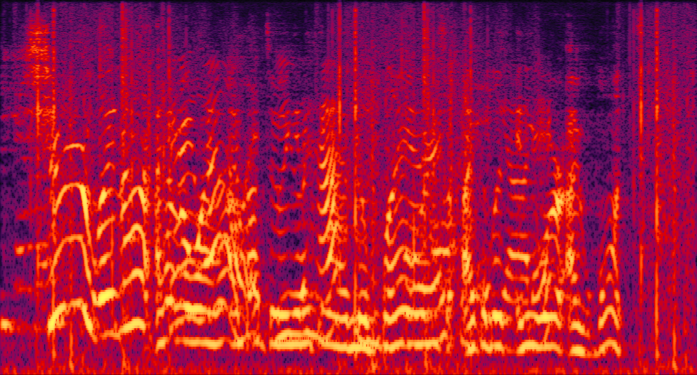 | 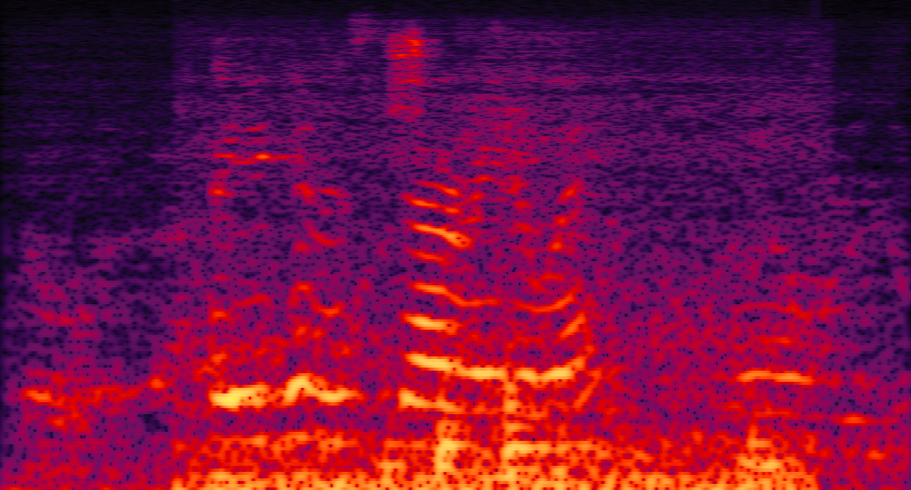 | 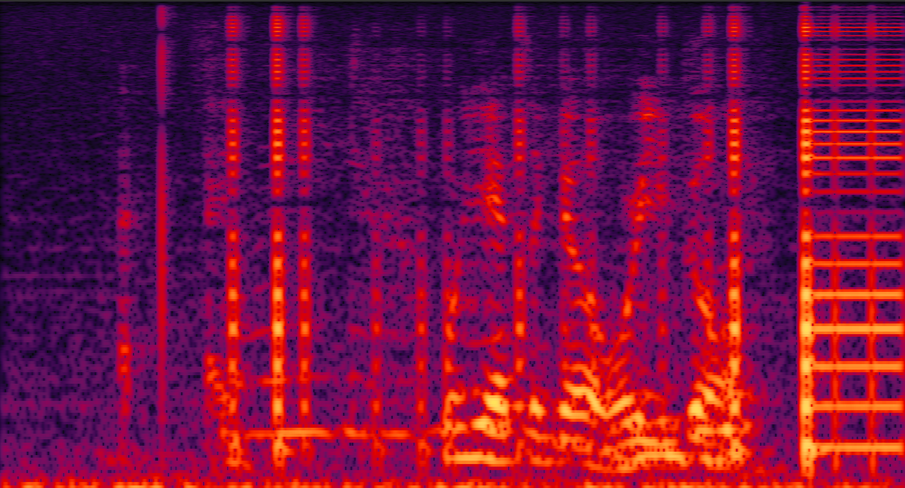 | |
| Enhanced by speech separation | 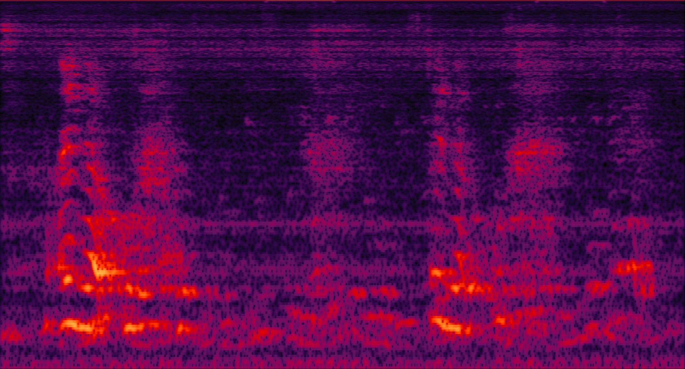 | 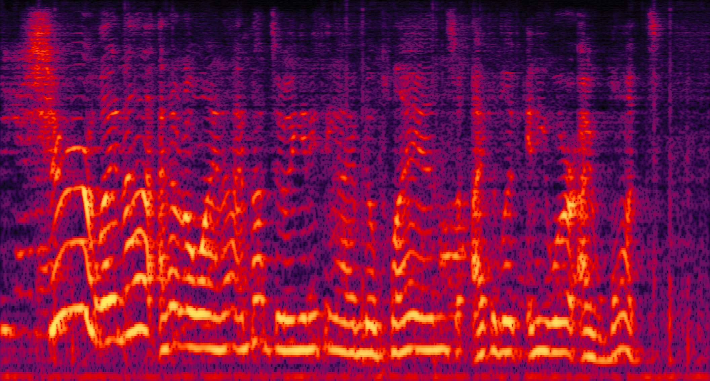 | 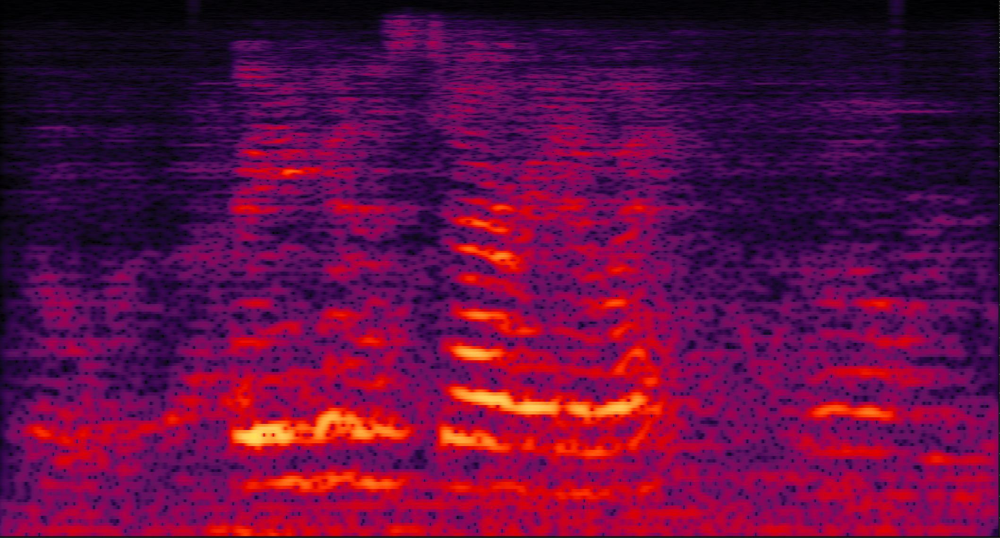 | 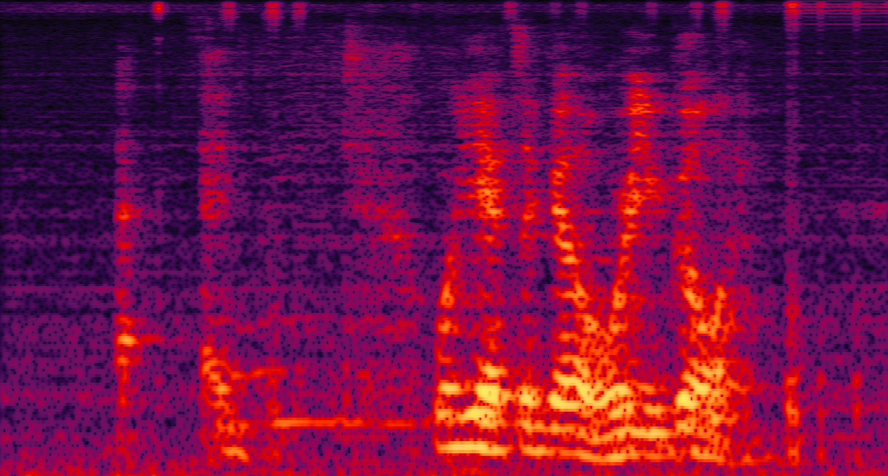 | |
| Enhanced by speech dereverberation and separation | 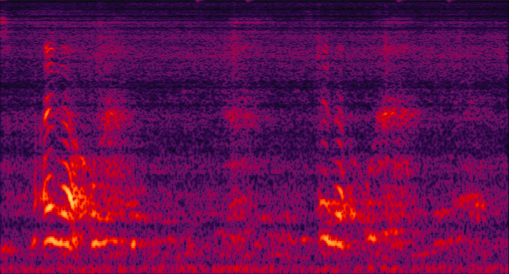 | 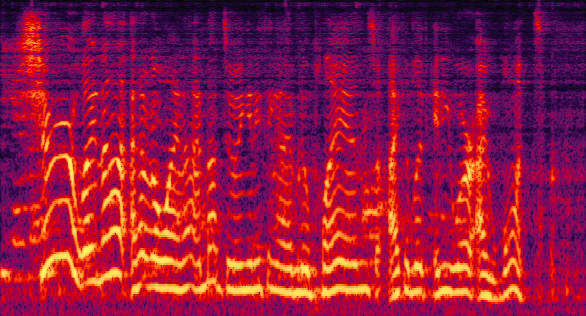 |

|

|
|
IV. Reference
[1] G. Li et al., “Audio-visual end-to-end multi-channel speech separation, dereverberation and recognition,” TASLP, vol. 31, pp. 2707–2723, 2023.
[2] C. Busso et al., “IEMOCAP: interactive emotional dyadic motion capture database,” LANG RESOUR EVAL, vol. 42, no. 4, pp. 335–359, 2008.
[3] https://huggingface.co/facebook/hubert-large-ls960-ft
[4] https://huggingface.co/dima806/facial_emotions_image_detection